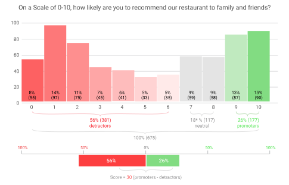
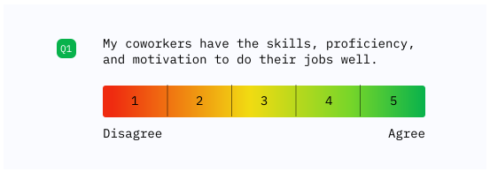
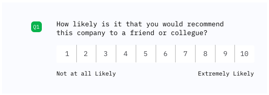

3 Understanding Data Types in Social Sciences
In social science research, understanding the nature of our data is crucial for selecting appropriate analysis methods and drawing valid conclusions.
3.1 Foundations in Number Sets
Before diving into data types, it’s essential to understand the basic number sets that form the foundation of our understanding of data.
Basic Number Sets
- Natural Numbers (ℕ): The counting numbers {0, 1, 2, 3, …}
- Integers (ℤ): Includes natural numbers, their negatives, and zero {…, -2, -1, 0, 1, 2, …}
- Rational Numbers (ℚ): Numbers that can be expressed as a fraction of two integers
- Real Numbers (ℝ): All numbers on the number line, including rationals and irrationals
Properties of Sets
Countable Sets: Sets whose elements can be put in a one-to-one correspondence with the natural numbers. For example, the set of integers is countable.
Uncountable Sets: Sets that are not countable. The set of real numbers is uncountable.
Discrete Sets: Sets where each element is separated from other elements by a finite gap. The integers form a discrete set.
Dense Sets: Sets where between any two elements, there is always another element of the set. The rational numbers and real numbers are dense sets.
Understanding these set properties is crucial for grasping the nature of different data types in social sciences.
3.2 Discrete vs. Continuous Data
In data science and statistics, we categorize variables as either discrete or continuous. This distinction shapes how we analyze data and which statistical methods we apply. However, the boundary between these categories is not always clear-cut, and some variables exhibit characteristics of both types. This section explores discrete and continuous data, their differences, and the interesting cases of variables that challenge our intuitive understanding.

Discrete Data
Discrete data can only take on specific, countable values. These values are often (but not always) integers.
Characteristics of Discrete Data:
- Countable set of possible values
- Often represented by integers
- Can be finite or infinite
- No values exist between two adjacent data points
Examples:
- Number of students in a class
- Number of cars sold by a dealership
- Number of coins in a piggy bank
- Dice rolls (1, 2, 3, 4, 5, or 6)
Continuous Data
Continuous data can take on any value within a given range, including fractional and decimal values. Importantly, continuity is characterized by density: between any two values, there are infinitely many other possible values.
Characteristics of Continuous Data:
- Values from dense sets (rational numbers or real numbers)
- Can be measured to any level of precision (theoretically)
- There are infinitely many values between any two data points
- Typically represented on a continuous scale
Examples:
- Height
- Weight
- Temperature
- Time duration
Continuous data comes from dense sets, where between any two distinct values, there exists another value from the set. The most common examples are:
- Real numbers: Uncountable and dense
- Rational numbers: Countable but dense
This density property is what gives continuous data its characteristic “smoothness” and allows us to apply calculus-based statistical methods.
The Discrete-Continuous Spectrum
In practice, some variables that are mathematically discrete are often treated as if they are continuous. This dual nature provides flexibility in how these variables can be analyzed and interpreted.
Reasons for Treating Discrete Data as Continuous:
Fine Granularity (Small Discrete Increments)
- When a discrete variable has very small increments between possible values, it can approximate continuity.
- Example: Income measured in individual cents. While technically discrete, the tiny increments and vast number of possible values make it behave similarly to a continuous variable.
Analytical Convenience
- Continuous methods often yield reasonable and useful results even for dense discrete variables.
- Assuming continuity allows the use of calculus-based methods and existing statistical tools.
Approximation of Underlying Phenomena
- A discrete measurement might represent an underlying continuous process.
- Example: While we measure time in discrete units (seconds, minutes, hours), time itself flows continuously.
Examples of Variables with Dual Discrete-Continuous Nature:
Age
- Discrete: Typically reported in whole years
- Continuous: Can be considered as a continuous variable in many analyses, especially when dealing with large populations or when precision matters
Price and Income
- Discrete: Prices and incomes are actually measured in discrete units (e.g., cents or smallest currency unit)
- Continuous: In economic models and many analyses, treated as continuous variables due to their dense nature and analytical convenience
Test Scores
- Discrete: Often given as whole numbers or fixed increments
- Continuous: In statistical analyses, may be treated as continuous, especially when the range of possible scores is large
Conclusion
The distinction between discrete and continuous data is not always rigid in practice. Many variables, including those involving money, percentages, or dense measurements, can be viewed through both discrete and continuous lenses. When in doubt, consider both your measurement precision and your analytical goals when deciding how to treat a variable. The choice should be guided by the nature of the data, the goals of the analysis, and the potential implications of the choice. This flexibility, when used thoughtfully, provides powerful tools for researchers to gain insights from their data.
The Language Connection
Think about how you naturally ask questions about quantities:
- “How many cookies are in the jar?” (counting)
- “How much water is in the glass?” (measuring)
This natural language distinction reflects the two fundamental types of numerical data:
Discrete Data = “How Many?” Questions
Like counting whole objects (countable nouns)
Takes specific values with gaps between them
Examples:
- Number of pets: 0, 1, 2, 3… (can’t have 2.5 pets)
- Dice rolls: 1, 2, 3, 4, 5, 6
- Students in a class: 20, 21, 22…
🤔 Self-Check: Can you find a value between 2 and 3 students? Why not?
Continuous Data = “How Much?” Questions
Like measuring quantities (uncountable nouns)
Can take any value within a range
Examples:
- Height: 1.7231… meters
- Temperature: 36.8325… °C
- Time: 3.5792… hours
🤔 Self-Check: Write down three different values between 1.72 and 1.73 meters
Quick Recognition Guide
- If you naturally ask “How many?” → Discrete
- If you naturally ask “How much?” → Continuous
- If you can measure it more precisely → Continuous
- If you can only use whole numbers → Discrete
✍️ Practice: Classify these quantities as discrete or continuous
- Your age in years: _____
- Your height: _____
- Number of songs in a playlist: _____
- Volume of water: _____
3.3 Introduction to Stevens’ Data Typology
Stanley S. Stevens, an American psychologist, introduced a classification system for scales of measurement in his 1946 paper “On the Theory of Scales of Measurement.” This system, known as Stevens’ data typology or levels of measurement, has become fundamental in understanding how different types of data should be analyzed and interpreted.
Stevens proposed four levels of measurement:
- Nominal
- Ordinal
- Interval
- Ratio
Each level has specific properties and allows for different types of statistical operations and analyses.


Stanley Stevens used the term “levels of measurement” rather than simply “types” because he conceived of them as existing in a hierarchy, where each level builds upon the previous one with increasing mathematical properties.
Hierarchical Structure:
Stevens organized them from least to most informative: Nominal → Ordinal → Interval → Ratio. Each level includes all properties of the levels below it, plus additional mathematical characteristics.
Measurement Theory Perspective:
Stevens was fundamentally concerned with what mathematical operations are meaningful at each level:
- Nominal: only equality comparisons
- Ordinal: adds greater than/less than
- Interval: adds addition and subtraction
- Ratio: adds multiplication, division, and meaningful ratios
The word “level” emphasizes that these aren’t just arbitrary categories, but represent degrees of measurement sophistication. Higher levels allow more powerful statistical analyses and convey more information about the underlying phenomena being measured.
This hierarchical framing helped researchers understand not just what kind of data they had, but what they could legitimately do with it statistically.
Nominal Scale
Definition
The nominal scale is the most basic level of measurement. It uses labels or categories to classify data without any quantitative value or order.
Properties
- Categories are mutually exclusive
- No inherent order among categories
- No meaningful arithmetic operations can be performed
Examples
- Nationality (Polish, English, …)
- Blood types (A, B, AB, O)
- Eye color (Blue, Brown, Green, Hazel)
- Binary variables (“Success” versus “Failure”)
Ordinal Scale
Definition
The ordinal scale categorizes data into ordered categories, but the intervals between categories are not necessarily equal or meaningful.
Properties
- Categories have a defined order
- Differences between categories are not quantifiable
- Arithmetic operations on the numbers are not meaningful
Examples
- Education levels (High School, Bachelor’s, Master’s, PhD)
- Likert scales (Strongly Disagree, Disagree, Neutral, Agree, Strongly Agree)
- Socioeconomic status (Low, Medium, High)
Likert scales are a type of rating scale that constitute an ordinal level of measurement, meaning responses can be ranked in order but the distances between points are not necessarily equal.
Agreement Scale (Strongly Disagree → Strongly Agree) - Best for measuring beliefs and perceptions - Example: “This website is easy to navigate”
Satisfaction Scale (Very Dissatisfied → Very Satisfied) - Ideal for evaluating experiences and services - Example: “How satisfied are you with the customer service you received?”
Opinion Scale (Strongly Oppose → Strongly Support) - Used to gauge positions on proposals or initiatives - Example: “How do you feel about implementing a hybrid work policy?”
Frequency/Attitude Scale (Never → Always) - Measures behavioral patterns and consistency - Example: “I would recommend this product to others”
Best Practices: Use 5-7 point scales, keep neutral middle options, ensure statements are clear and unambiguous, and maintain consistent directionality (positive to negative or vice versa).
Examples of rating scales
  
Interval Scale
Definition
The interval scale has ordered categories with equal intervals between adjacent categories. However, it lacks a true zero point.
Properties
- Equal intervals between adjacent categories
- No true zero point (zero is arbitrary)
- Ratios between values are not meaningful
Examples
- Temperature in Celsius or Fahrenheit
- Calendar years
- pH scale (the difference between pH 4 and 5 represents the same change in hydrogen ion concentration as between pH 6 and 7)
- Elevation above sea level
Ratio Scale
Definition
The ratio scale is the highest level of measurement. It has all the properties of the interval scale plus a true zero point, making ratios between values meaningful.
Properties
- All properties of interval scales
- True zero point
- Ratios between values are meaningful
Examples
- Height
- Weight
- Age
- Income
Key Idea
An interval scale is one where the distances between values are meaningful, but the zero point is arbitrary. For interval scales (e.g., temperature):
- Allowed: Addition/subtraction of values and multiplication/division by constants.
- Not allowed: Multiplication/division of values from the scale by each other, as this leads to results without physical interpretation.
Properties of Interval Scales
- Equal intervals represent the same differences:
- The difference between 20°C and 25°C (5°C) represents the same change as between 30°C and 35°C.
- Proportions of differences are preserved: 10°C is twice the change of 5°C.
- The zero point is arbitrary:
- 0°C is the freezing point of water, not the absence of temperature.
- The same physical state has different values in different scales: 0°C = 32°F.
- Linear transformation:
- General formula: y = ax + b, where a \neq 0.
- For temperature: F = C \times \frac{9}{5} + 32.
Theoretical Conclusions
- Allowed operations:
- Addition/subtraction (preserves differences).
- Multiplication/division by constants (scaling).
- Arithmetic means.
- Comparing temperature differences.
- Not allowed operations:
- Multiplying temperatures by each other.
- Dividing temperatures by each other.
- Geometric means.
- Coefficient of variation.
- Practical implications:
- Variance and standard deviation require careful interpretation.
- Better to use measures based on differences (e.g., MAD - mean absolute deviation).
- When comparing variability, it is advisable to standardize the data.
Practical Rule
If your calculations involve multiplying values from an interval scale by each other, be particularly cautious in interpreting the results!
Importance in Research and Analysis
Understanding Stevens’ data typology is crucial for several reasons:
Choosing appropriate statistical tests: The level of measurement determines which statistical analyses are appropriate for a given dataset.
Interpreting results: The meaning of statistical results depends on the level of measurement of the variables involved.
Designing measurement instruments: When creating surveys or other measurement tools, researchers must consider the level of measurement they want to achieve.
Data transformation: Sometimes, data can be transformed from one level to another, but this must be done carefully to avoid misinterpretation.
Controversies and Limitations
While Stevens’ typology is widely used, it has faced some criticisms:
Rigidity: Some argue that the typology is too rigid and that many real-world measurements fall between these categories.
Treatment of ordinal data: There’s ongoing debate about when it’s appropriate to treat ordinal data as interval for certain analyses.
Psychological scaling: Some psychological constructs (like intelligence) are difficult to categorize definitively within this system.
Conclusion
Stevens’ data typology provides a fundamental framework for understanding different types of data and their properties. By recognizing the level of measurement of their variables, researchers can make informed decisions about data collection, analysis, and interpretation. However, it’s important to remember that while this typology is a useful guide, real-world data often requires nuanced consideration and may not always fit neatly into these categories.
pH is considered an interval scale because:
It has ordered categories: Lower pH values indicate higher acidity, while higher values indicate higher alkalinity.
The intervals between adjacent pH values are equal in terms of hydrogen ion concentration:
- Each whole number change in pH represents a tenfold change in hydrogen ion concentration.
- For example, the difference in acidity between pH 4 and pH 5 is the same as the difference between pH 7 and pH 8.
It lacks a true zero point:
- pH 0 does not represent a complete absence of hydrogen ions.
- Negative pH values and values above 14 are possible in extreme conditions.
Ratios are not meaningful:
- A pH of 4 is not “twice as acidic” as a pH of 2.
- The ratio of hydrogen ion concentrations, not pH values, indicates relative acidity.
These characteristics align with the definition of an interval scale, where the differences between values are meaningful and consistent, but ratios are not interpretable.
Reality: IQ is Fundamentally an Ordinal Scale
How IQ scores are created – step by step:
- Collecting raw scores: People take a test and receive a number of correct answers (e.g., 45 out of 60 questions)
- Ordering: All raw scores are arranged from worst to best
- Assigning ranks: Each score is assigned a position in the ranking
- Transformation to IQ scale: Ranks are mathematically transformed so that the mean equals 100 and standard deviation equals 15
Key problem: This process forces a normal distribution onto data that may not have been normal in its original form. This means that equal differences in IQ points (e.g., difference between IQ 100 and 115 vs. difference between IQ 115 and 130) may not correspond to equal differences in actual cognitive abilities.
IQ 130 does not mean “twice the intelligence” of IQ 65. IQ points only show a person’s position relative to other people in the sample, not the actual amount of intelligence. This is similar to places in a competition – the winner might win by a hair or by miles, but will still be in first place.
In research practice: why do we sometimes treat IQ as an interval scale?
This is a methodological compromise that allows for the use of more precise statistical tools:
✅ Treating IQ as an interval scale is acceptable when:
- Using standard statistical tests (correlations, regressions, t-tests)
- Comparing groups within the same test and population - Being aware of the limitations of this approach
- Our conclusions don’t depend on differences being exactly equal
⚠️ Remember the limitations:
- This is a simplification of reality
- The assumption works better for scores near the mean (IQ 85-115) than at the extremes
- Results must be interpreted carefully
❌ Never:
- Say that IQ differences mean equal differences in intelligence
- Use statements like “twice as intelligent”
Practical Guidelines for Researchers
- Be transparent:
- Clearly state: “We treat IQ as an interval scale for statistical purposes, remembering that it is fundamentally an ordinal scale”
- Consider alternatives:
- Use non-parametric tests when sample size allows
- Compare results from different analytical methods
- Interpret cautiously:
- Focus on statements about order (“group A achieved higher scores than group B”)
- Avoid precise statements about the magnitude of differences
- Remember: a 15-point IQ difference means “one standard deviation in the sample,” not “a specific amount of additional intelligence”
IQ is an ordinal scale that has been transformed to look like an interval scale. It can be used in statistical analyses requiring an interval scale, but one must always remember its true nature when interpreting results. The key is understanding that IQ points tell us about position in a group, not about the absolute amount of intelligence.
3.4 Common Ordinal Scales in Behavioural Research
Likert Scales
Likert scales are widely used in psychology and social sciences to measure attitudes, opinions, and perceptions. Named after psychologist Rensis Likert, these scales typically consist of a series of statements or questions that respondents rate on a scale, often from “Strongly Disagree” to “Strongly Agree.”

Why Likert Scales are Ordinal Variables
Likert scales are considered ordinal variables for several reasons:
Order without equal intervals: While the responses have a clear order (e.g., “Strongly Disagree” < “Disagree” < “Neutral” < “Agree” < “Strongly Agree”), the intervals between these categories are not necessarily equal.
Subjective interpretation: The difference between “Strongly Disagree” and “Disagree” may not be the same as the difference between “Agree” and “Strongly Agree” for all respondents.
Lack of true zero point: Likert scales typically don’t have a true zero point, which is a characteristic of interval or ratio scales.
IQ and Other Psychological Variables as Ordinal Measures
Many psychological measures, including IQ, are often treated as interval scales but are, in fact, ordinal. Here’s why:
IQ Scores:
- While IQ scores are presented as numbers, the difference between an IQ of 100 and 110 may not represent the same cognitive difference as between 130 and 140.
- The scale is normalized and adjusted over time, making it difficult to claim true interval properties.
Other Psychological Measures:
- Depression scales (e.g., Beck Depression Inventory)
- Anxiety measures (e.g., State-Trait Anxiety Inventory)
- Personality assessments (e.g., Big Five Inventory)
These measures often use summed Likert-type items or other scoring methods that don’t guarantee equal intervals between scores.
Implications for Analysis
Recognizing these measures as ordinal has important implications for data analysis:
Appropriate statistical tests: Use non-parametric tests (e.g., Mann-Whitney U, Kruskal-Wallis) instead of parametric ones.
Correlation analysis: Use Spearman’s rank correlation instead of Pearson’s correlation.
Central tendency: Report median and mode rather than mean.
Data visualization: Use methods appropriate for ordinal data, such as bar plots or stacked bar charts.
Conclusion
While Likert scales and many behavioural measures are often treated as interval data for practical reasons, it’s crucial to remember their ordinal nature.

3.5 Appendix A
Interval scales have equal intervals between values but an arbitrary zero point (e.g., Celsius temperature, calendar dates). Ratio scales have both equal intervals and an absolute zero (e.g., Kelvin temperature, height, weight).
Addition and Subtraction: Valid for Interval Scales
Differences maintain consistent proportional relationships under linear transformations. When converting between scales using y = a + bx where b > 0, the additive constant a cancels out:
(y_2 - y_1) = (a + bx_2) - (a + bx_1) = b(x_2 - x_1)
Example: Using Celsius to Fahrenheit conversion where F = 1.8C + 32:
- Any 10°C difference always converts to 18°F: 18 = 1.8 \times 10
- Try (20°C - 10°C) \rightarrow (68°F - 50°F) = 18°F
- Try (100°C - 90°C) \rightarrow (212°F - 194°F) = 18°F
The relationship is consistent: a 10-degree Celsius difference always corresponds to an 18-degree Fahrenheit difference, regardless of where on the scale we measure.
Multiplication and Division: Require Ratio Scales
Ratios are inconsistent when the zero point is arbitrary. The additive constant a does NOT cancel out in ratios:
\frac{y_2}{y_1} = \frac{a + bx_2}{a + bx_1} \neq b \cdot \frac{x_2}{x_1}
Unless a = 0 (absolute zero), ratios change unpredictably depending on which values you compare.
Example: Temperature ratios give inconsistent results:
- Is 20°C “twice as hot” as 10°C?
- Celsius: 20/10 = 2.0
- Fahrenheit: 68/50 = 1.36
- Kelvin: 293.15/283.15 = 1.035
- What about 100°C vs. 90°C?
- Celsius: 100/90 = 1.11
- Fahrenheit: 212/194 = 1.09
The ratios vary depending on both the scale AND which temperatures we pick. Only with an absolute zero do ratios have consistent physical meaning.
Implications for Statistical Measures
Arithmetic mean is valid for interval scales because it uses addition:
\bar{x} = \frac{x_1 + x_2 + \cdots + x_n}{n}
When we transform to scale y, the mean transforms consistently: \bar{y} = a + b\bar{x}
Geometric mean requires ratio scales because it uses multiplication:
GM = \sqrt[n]{x_1 \times x_2 \times \cdots \times x_n}
The geometric mean of temperatures in Celsius gives a different result than the geometric mean of the same temperatures in Fahrenheit (after converting back). This makes the geometric mean meaningless for interval data.
Example: For temperatures 10°C and 20°C:
- Geometric mean in Celsius: \sqrt{10 \times 20} = 14.14°C \rightarrow 57.45°F
- Geometric mean in Fahrenheit: \sqrt{50 \times 68} = 58.31°F \rightarrow 14.62°C
These don’t match! The geometric mean depends on the arbitrary zero point.
Variance and Standard Deviation: Valid for Interval Scales
Variance and standard deviation are acceptable for interval data because they operate on deviations from the mean, which are differences. Critically, variance is translation-invariant: adding a constant to all values doesn’t change the variance because the deviations remain the same.
Under linear transformation y = a + bx, variance transforms predictably:
\text{Var}(y) = b^2 \text{Var}(x)
The constant a cancels out when computing deviations, just as it does for simple differences.
Example proof: For temperatures 10°C and 20°C:
In Celsius:
- Mean: \bar{x} = (10 + 20)/2 = 15°C
- Deviations: (10 - 15) = -5, (20 - 15) = 5
- Variance: \text{Var}(X) = [(-5)^2 + (5)^2]/2 = 50/2 = 25°C^2
- Standard deviation: \text{SD}(X) = 5°C
In Fahrenheit:
- Convert: 10°C → 50°F, 20°C → 68°F
- Mean: \bar{y} = (50 + 68)/2 = 59°F
- Deviations: (50 - 59) = -9, (68 - 59) = 9
- Variance: \text{Var}(Y) = [(-9)^2 + (9)^2]/2 = 162/2 = 81°F^2
- Standard deviation: \text{SD}(Y) = 9°F
Check the transformation:
- Conversion slope: b = 1.8 (from F = 1.8C + 32)
- Predicted variance: 1.8^2 \times 25 = 3.24 \times 25 = 81°F^2 ✓
- Predicted SD: 1.8 \times 5 = 9°F ✓
Perfect match! The variance and standard deviation transform consistently and predictably, making them valid measures of spread for interval data.
Translation-invariance demonstration: If we shift all temperatures by +100°C (adding 110°C and 120°C):
- New mean: (110 + 120)/2 = 115°C
- New deviations: (110 - 115) = -5, (120 - 115) = 5
- New variance: \text{Var}(X) = [(-5)^2 + (5)^2]/2 = 25°C^2 (unchanged!)
The variance remains 25°C² because the spread hasn’t changed, only the location shifted.
Key principle: Operations based on addition/subtraction and differences work for interval scales because the arbitrary constant a cancels out. Operations involving multiplication/division or ratios require ratio scales because a distorts the results. Variance and SD work because they’re translation-invariant and based on deviations from the mean (differences), not ratios.
Summary: Valid Statistical Measures by Measurement Scale
| Statistical Measure | Nominal | Ordinal | Interval | Ratio |
|---|---|---|---|---|
| Mode | ✓ | ✓ | ✓ | ✓ |
| Median | ✗ | ✓ | ✓ | ✓ |
| Arithmetic Mean | ✗ | ✗ | ✓ | ✓ |
| Geometric Mean | ✗ | ✗ | ✗ | ✓ |
| Variance & SD | ✗ | ✗ | ✓ | ✓ |
| Covariance | ✗ | ✗ | ✓ | ✓ |
| Pearson Correlation | ✗ | ✗ | ✓ | ✓ |
| Spearman Correlation | ✗ | ✓ | ✓ | ✓ |
| Coefficient of Variation | ✗ | ✗ | ✗ | ✓ |
Notes:
- Nominal scales (e.g., colors, categories) only support frequency-based measures like mode
- Ordinal scales (e.g., rankings, Likert scales) add median and rank-based correlations
- Interval scales (e.g., Celsius, calendar dates) support all measures based on addition/subtraction
- Ratio scales (e.g., height, weight, Kelvin) additionally support measures requiring multiplication/division and meaningful ratios
- Coefficient of variation (\text{CV} = \text{SD}/\text{Mean}) requires a meaningful zero point, so only ratio scales